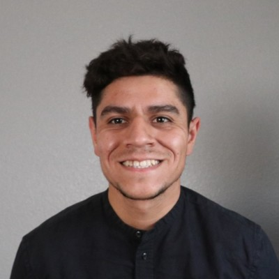

Gerardo Solis

Phone: (626)388-7050
Email: gsolis5114@gmail.com
LinkedIn
Gerardo's Blog
Summary
Ambitious and eager to continue learning concepts in both the field of Software Engineering and
Information Technology. I find enjoyment within the entire field of Information Technology
including Cybersecurity, Game Development, Networking, and Software Engineering. I hope to
continue my growth in this field, while also contributing to the success of a team.
Experience and Skills
-
NCAE Regional Champion (MVP): Led defense against sophisticated red-team attacks, securing operational integrity, and progressed to the National competition.
-
HiveStorm: Effectively purged malicious entities in various operating system environments.
-
CyberForce (Team Captain): Specialized in environment hardening and threat detection using advanced security tools.
-
Current project consists of malware analysis and development of malware such as DLLInjection, web development and full stack development.
-
Skilled in system administration (iOS, Linux, Windows OS/Server), with strong capabilities in Active Directory and Group Policy.
-
Experienced in Remote Desktop support and command-line interface operations.
-
Competent in C/C++, Java, with a focus on Object-Oriented Programming and data structures.
Current Employer
City of Glndale, CA - Part-time, February 2022 - Present
-
Utilized MS Server 2016's Active Directory services to oversee users and computers.
-
Assigned roles to users and computers via the Group Policy service.
-
Established policies and permissions for computers using the Google Enterprise admin console.
-
Collaborated with the City of Glendale's Systems Engineer to troubleshoot a "domain trust issue" impacting the public library's domain due to a problematic third-party software update.
-
Resolved email delivery issues in a PHP-based library registration system by correctly configuring SMTP settings for TLS encryption.
Certifications
CompTIA A+, Google IT, CompTIA Network+ (in progress), CCNA (in progress)
Education
California State Polytechnic University-Pomona
-
Bachelor of Science - BS, Computer Science
-
Minor - Computer Information Systems
-
Jun 2021 – Present
Mt. San Antonio College
-
Associate's degree, Mathematics
-
August 2014 – August 2021